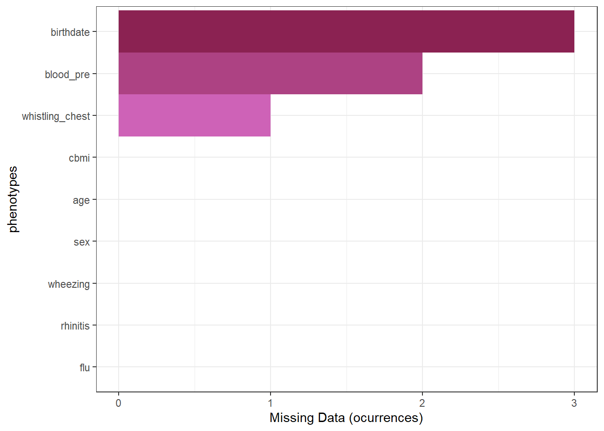
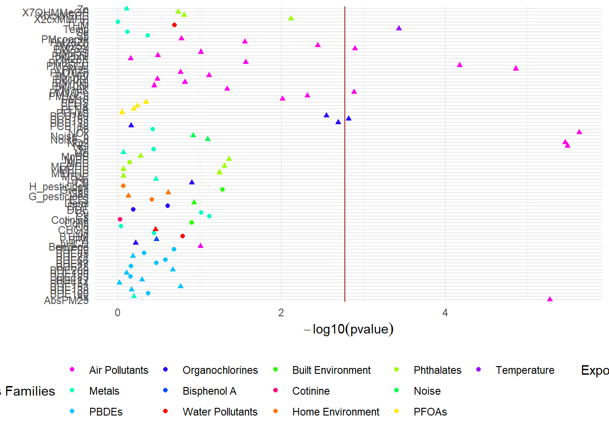

require('DSI')
require('DSOpal')
require('dsBaseClient')
require('dsExposomeClient')
user <- "test"
pass <- "Testtest1!"
library(httr);set_config(config(ssl_verifypeer = 0L))
builder <- DSI::newDSLoginBuilder()
builder$append(server = 'server1',
url = "https://35.219.173.160/repo",
user = user,
password = pass,
profile = "default")
logindata <- builder$build()
conns <- DSI::datashield.login(logins = logindata, assign = F)Non-disclosive Exposome analysis using Google Cloud and dsExposome
Meet Google Cloud
Google Cloud is a cloud-based computing platform that offers a wide variety of services. For this demonstration, we have spined-up a simple Compute Engine with debian-11-bullseye-v20221206 and docker 20.10.22.
This is basically a server instance similar to what could be found in a typical research institution, but instead of being on-premises, it is hosted on the cloud by Google.
Hardware wise, we have used a 4 core 16GB RAM instance with 50GB of SSD storage. At the time of writing, such specs are billed at ~120 USD per month.
Exposome analysis
In order to demonstrate a fully reproducible analysis pipeline, we will follow the actual vignette from the dsExposomeClient package. That means that on the Google Cloud instance we have uploaded the same dataset.
Connecting to the Opal server
Assigning the resource
datashield.assign.resource(
conns,
symbol = 'exposome_resource',
resource = list(server1 = 'EXPOSOME.exposomeSet')
)
ds.class("exposome_resource")$server1
[1] "RDataFileResourceClient" "FileResourceClient"
[3] "ResourceClient" "R6" datashield.assign.expr(
conns,
symbol = "exposome_resource",
expr = quote(as.resource.object(exposome_resource))
)
ds.class("exposome_resource")$server1
[1] "ExposomeSet"
attr(,"package")
[1] "rexposome"Working with the data
ds.exposome_summary("exposome_resource", "AbsPM25")$server1
$server1$class
[1] "numeric"
$server1$length
[1] 109
$server1$`quantiles & mean`
5% 10% 25% 50% 75% 90% 95% Mean
0.2163124 0.2508699 0.3192557 0.3542890 0.3967783 0.4380127 0.4778897 0.3546863 phenos <- ds.tableMissings("exposome_resource", set = "phenotypes")
ds.plotMissings(phenos)$pooled
exwas_results <- ds.exwas(
"blood_pre ~ sex",
Set = "exposome_resource",
family = "gaussian",
type = "meta"
)ds.plotExwas(exwas_results, type="manhattan")$server1
datashield.logout(conns)